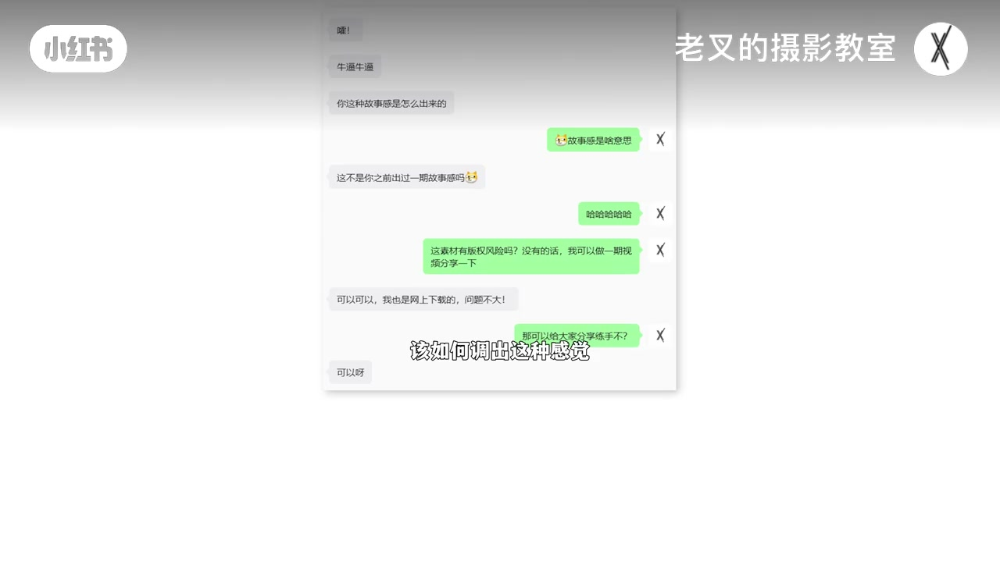
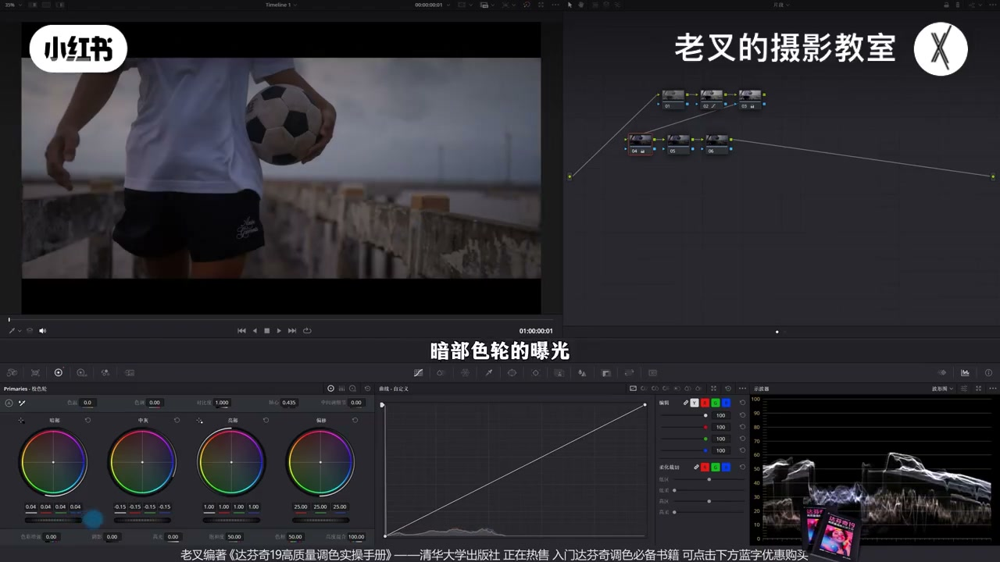
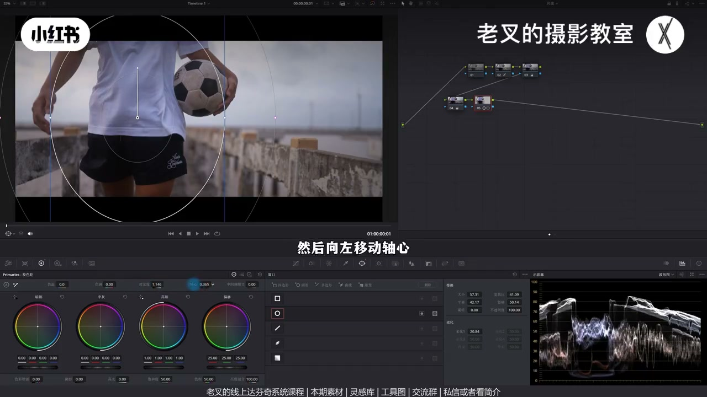
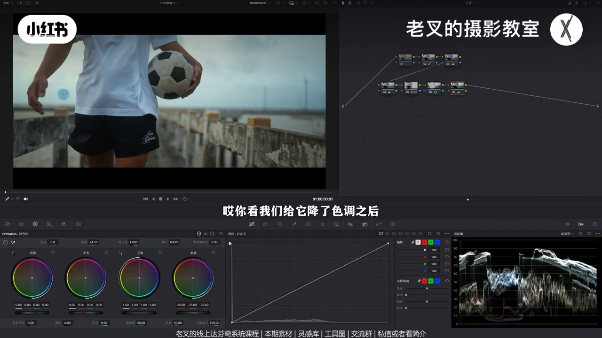
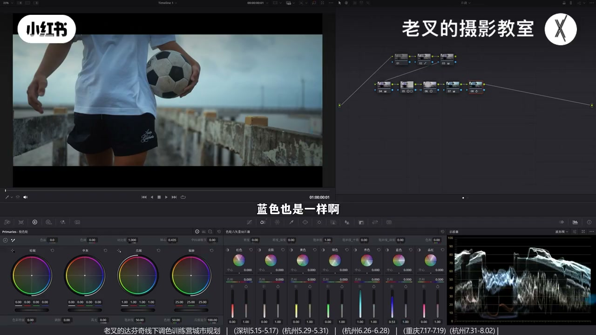
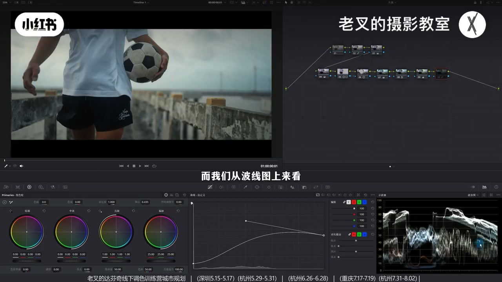

内容要点
朋友想阴天故事感，自己调的说不上来的怪。老叉：还原高光约 80、暗部略暗；故事感要求中间调尽量低——压中灰再抬暗部与亮部找回层次。去灰不用全局对比（人太暗、天太亮），而用人物遮罩对比度+外部节点分区。颜色在解衣服发紫时顺势降色调走青绿冷调；要更暗则加蓝青密度而非死压曝光；可选高光暖风格化放独立节点；柔和对比度把天空压灰且不牺牲中间反差。
知识结构
阴天高光别太亮（约 80）；暗部可略暗。
故事感＝中间调尽量低；压中灰后抬暗部/亮部；波形中灰下压。
人物简易遮罩加对比+轴向左；外部节点分区调环境，避免全局对比失控。
衣服发紫→降色调顺带青绿冷调；可再略降色温加蓝。
加蓝青密度让观感更阴沉，比直接压曝光自然；高光暖风格化建议独立节点。
样条线压高光找灰天；与朋友结果对比问题一目了然。
阴天故事感关键是中间调够低、暗中仍有可控亮部。用压中灰+分区对比去灰，用降色调解问题同时赋冷调，用密度做「阴沉」而不是死压曝光；风格化节点与必做冷调拆开，方便后悔修改。
00:00-00:28怪结果 vs 目标：阴天故事感
朋友发素材想做阴天故事感，自己那版确实怪；老叉一版对方觉得不错。先还原：阴天高光别太亮，大约波形 80 左右，暗部可略暗。三号节点略加饱和。

00:28-01:16故事感：把中间调尽量压低
要阴天故事感，中间调曝光应尽量低。第二排降中灰曝光后暗部会过暗，再略抬暗部色轮与亮部色轮把高光找回。数值一步到位是演示，实操按画面反复微调——重点是结果满足需求。
波形上高光与暗部变化不大，中灰明显下压，这就是目的；用曲线或并进还原节点也可以。

01:16-02:11去灰：人物遮罩对比 + 外部节点，别全局硬加
仍略发灰时想到加对比，但全局对比易让人物（尤其裤子）太暗、天空太亮，不符阴天。给人物画简易遮罩单独加一点对比，轴向左让人物略亮；Option/Alt+O 建外部节点，对其余区域用不同力度加对比并调轴，避免太暗。
看起来像全局加对比，实则人物与环境独立可控。曝光到此差不多。

02:11-03:07解衣服发紫，顺势走出青绿冷调
阴天走冷不错，但全局猛加蓝会像朋友那样颜色无层次。先解不对：衣服发紫，节点降色调——紫消了，整体带青绿冷调，等于在解决问题时赋风格。可再略降色温加点蓝，力度自控。素材已传平台。

03:07-04:35密度做阴沉；高光暖风格化独立节点
朋友要暗，再直接压曝光会丢层次。全局已偏冷，可节点增加蓝与青的密度（曝光观感下降），并略降饱和；盯画面避免噪点与断层。波形蓝部略降，观感却更阴沉，比直接降对应曝光更自然。
可选风格：亮部色轮左上略暖，中灰右下回调。不建议与前面「必做」的全局加冷挤同一节点——风格化是主观赋予，后悔只改该节点即可。

04:35-05:59柔和对比度压灰天，对比看清朋友问题
柔和对比度：可编辑样条线，高光端多降（阴天）、高光波谷上提找回，暗部上提、暗部波谷下降，把天空压灰，去掉特别亮的结果；波形上中间调反差几乎不变，只是平移，不牺牲整体反差。
与朋友结果对比，问题一目了然。节点看似多但每步简单，很少需要精细遮罩；真要精细优先神奇遮罩。与还原比变化未必戏剧，但风格走向更强。

完整转录（220段）
以下文本由 Whisper medium 模型自动转录，可能存在少量识别误差，已尽可能修正。
前两天有个朋友给我发了这个素材
说想做出阴天的故事感
这是他调的结果
他觉得就是说不上来的怪确实挺怪的
这是我调的结果
他觉得还不错
那么这一期我们就来分享一下
该如何调出这种感觉
其实很简单
我们首先给它做下还原
阴天的话高光就别太亮了
让它在80左右就行了
暗部可以稍微暗一些
大概是这种我调的这个程度
这个有点偏差问题不大
然后在3号节点加点饱和度
我们想要让画面呈现出阴天的感觉
而且要做出所谓的故事感
那么中间调部分的曝光
其实要尽可能的低
所以我们可以建立几个节点
拉到第二排
然后降低一点中晖部分的曝光
降低了中晖部分曝光之后
暗部也会太暗对不对
所以我们可以再稍微提高一点
暗部色轮的曝光
再稍微提高一点亮部色轮的曝光
让它高光能够回来
大概是这个效果
我这里是因为已经做出了结果
所以数值是一步到位的
但是大家在调的时候
要根据画面结果来反复微调
重点不是数值
而是画面结果得满足你的需求
我们看到波星图
高光和暗部几乎没有什么特别大的变化
对吧
但终会往下压了
这就是我们的目的
当然你用曲线能做到也是可以的
也可以把这个行为放在你的还原节点
问题都不大
再然后
我觉得画面其实还是有一点发灰的
灰的话我们首先想到的
肯定是增加对比度
对吧
我们再来个节点
但是全局增加对比度
很容易让人物变得特别暗
特别是裤子
同时天空又会太亮
不符合一天那种感觉
所以全局增加对比度肯定是不行的
我们可以给人物画一个简易的支障
单独的给人物增加对比度
也别加太多
加一点对比度之后
然后向左移动轴
新任它能够亮一点
大概是这个意思
然后再按住 alt 或者是 option 加 o
建立一个外部节点
也就是其余部分
对吧
我们给四周用不同的力度
我们给它稍微再增加一点对比度
也可以动一下轴
新任它别太暗
大概是个结果
那这样的调整
我们可以看这两个节点的变化
你看着好像是全局一起增加对比度
但确实是
只不过我们用两个制造的行为
让它每个区域
也就是人物跟环境能够独立的去调整
就不会出现刚刚那种不可控的情况了
那曝光铁刀这就差不多
其实不用怎么调
这时候我们看画面
颜色方面有没有特别不舒服的
我们都知道阴天走冷掉是不错的结果
但是如果我们直接给它全局加蓝
就会出现那位朋友那个问题
整体颜色没有任何的层次
我们要先解决画面中颜色不对的问题
我们看到衣服
其实这个衣服有点发紫
对不对
那既然它发紫的话
我们就可以再来个节点
稍微给全局降一点点色调
还可以多降一点
其实我们这个时候就可以给画面
整体带上一点风格走向了
你看我们给它降了色调之后
原本这个衣服就不紫了
而且整体带上了一点绿色的
青绿色的感觉
冷掉的效果就出来了
也就是说我们是在解决问题的同时
给画面赋予一定的风格
当然我们也可以给它再降一点点色温
让它再带点蓝
你看这种结果是不是挺好的
青绿青绿色的对吧
这个加蓝加绿的这个力度
你可以自己把控
素材我也经过了那位朋友的同意
传到了现场分享平台
可以私信或是看我紧接来加入或免费自取
还有大分析的线上系统课程和线下调色训练营
目前的大体颜色是有了
但是那位朋友明确的是要暗的效果
但是我们现在如果单纯的给它再压暗的话
又会失去那种层次对吧
暗的地方太多
这时候我们就可以考虑
既然全局是偏冷的
那么我们是不是可以稍微降低一点冷色的明度
也就是再来一个节点
增加蓝色和青色的密度
你看我增加密度了之后
它曝光是往下降的
蓝色也是一样啊
增加点密度
也可以适当的给它们降低一点饱和度
我们在调整密度的时候
大家一定要仔细看的画面
你调整的方向不要出现那些噪点
或者是断层的这种情况
好我们这样调完了之后呢
可以看一下波形图
在波形图上它确实是往下降了
对不对
蓝色部分都往下降了
但是下降的幅度不是很大
可是你从画面的观感来说
它就变得更加阴沉了
对吧
所以这样的一个效果能够比我们直接降低
对应的曝光效果会自然一些
再然后如果说你想来点风格化的颜色的话
当然这也可做可不做
我觉得可以给这个画面高光加一点点暖
也就是让它亮部色轮往左上方去走
然后再把中灰色轮往右下去做回调
好大概是这个意思
这种感觉其实也挺不错的
但是这个行为我不建议跟前面七号节点
全局加冷一起做
因为九号节点这个风格化
结果是我们主观想要赋予的
而前面全局加冷
是我认为对于这个画面来说
它就得做的
也就是说如果风格化
你在后面后悔了或者是需要修改的话
那么我们只需要单独修改这个九号节点就行了
不用整个颜色全部重新做
最后也可以来一个柔和对比度
也就是在曲线右上角三个点中
打开可编辑的样条线
把高光这一端给它往下降
多加一点没问题
因为它是阴天
把高光这里的波感给它往上提
把高光给它找回来
再把暗部这一端给它往上提
把暗部这里延伸出来的波感给它往下降
好大概是这个结果
让画面这个天空你仔细看
这个天空原本是这样的一个天空
我们给它压灰了
我不希望它画面中特别亮的那个结果存在
而我们从波线图上来看
除了天空跟暗部有一点变化
中间调的反差是不会有任何变化的
对不对
要有变化也只是平移
所以我们没有牺牲掉整体的一个反差
那调到这个结果就差不多了
我们可以与那位朋友的结果去做一下对比
我们通过对比就能看出来
它的问题在哪儿了
对不对
一目了然了
那素材大家别忘了
邻居过去之后感受一下
也可以提供看重点感受
我们这个调蓝对画面的影响
以及整体的一个风格走向
该怎么去做
其实对于我们这个画面来讲
这样一做你看的节点很多
其实每个节点都很简单
没有特别复杂的
也不会出现那种我们要画特别精细的遮罩
一般来讲精细的遮罩
我们现在也很少会用了
如果真要画的话
我们反而会优先考虑用神奇遮罩
因为你画精细太麻烦了
跟踪什么都太费劲了
那这样调完了
我们其实跟还原后的画面做下对比
你看着好像变化不是特别大
但是它就是比起你还原后
会带上一个比较强的一个风格走向
效果其实还是不错的
对吧
讲到这里
如果觉得你有帮助的话
还希望多多赞联
好了
这期就到这里
886